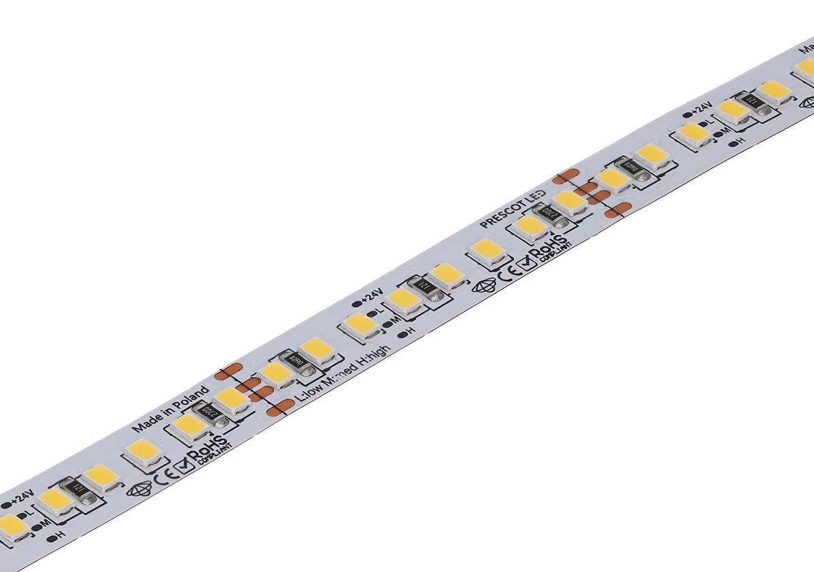

NOWOŚĆ · TRZY POZIOMY MOCY
DELUX 3 w 1
Jedna taśma. Trzy poziomy światła: LOW, MEDIUM i HIGH, wybierane sposobem podłączenia.
7lat gwarancji
dla serii DELUX 3 w 1
Obejrzyj model w 3D dla serii DELUX 3 w 1
W podglądzie: DELUX 3 w 1 · 24D160-11-3080-1010.

POZNAJ SERIĘ
Światło do Twojego projektu.
DELUX 3 w 1 pozwala dopasować tę samą taśmę do światła dekoracyjnego lub mocniejszego akcentu. Trzy poziomy mocy — 3, 6 i 11 W/m — wybierasz przez odpowiednie podłączenie. W prezentowanym wariancie ciepła biel ma 3000 K.
Odcinek cięcia ma 50 mm, a podkład 10 mm szerokości. Cztery pola przyłączeniowe to +24V, −L, −M i −H. W konfiguratorze obejrzysz taśmę z czterema przewodami, dobierzesz profil oraz osłonę i sprawdzisz sposób złożenia zestawu.
Gdzie się sprawdzi?
Zabudowy meblowe, akcenty architektoniczne, scenografia i reklama.